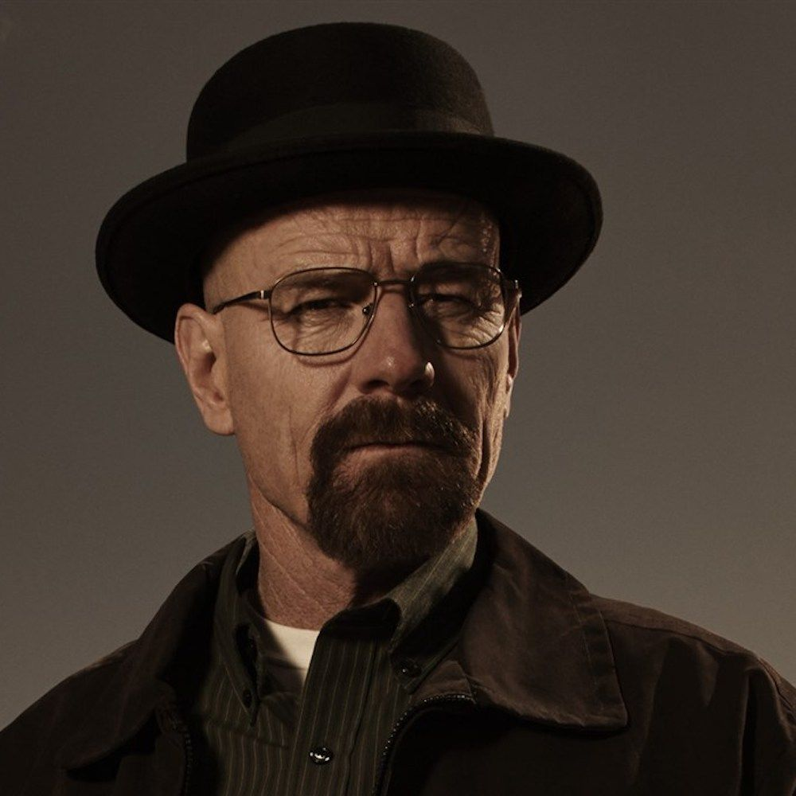

Walter White
Es un profesor de quimica secundaria que, despues de ser diagnosticado con cancer de pulmon, comienza a fabricar metanfetamina para conseguir dinero para su familia. Con el tiempo, su ambicion lo lleva a convertirse en un poderoso criminal conocido como Heisenberg.